TUTORIAL: INSTALL XSCHEM
This short tutorial will illustrate all the steps needed to install XSCHEM on a linux system, getting the files from the SVN repository.
-
Remove all previous xschem related data from old installs, i assume here
previous stuff was in /usr/local, if not change the root prefix accordingly:
schippes@mazinga:~$ sudo rm -rf /usr/local/share/xschem/ /usr/local/share/doc/xschem/ schippes@mazinga:~$ rm -f ~/xschemrc ~/.xschem/xschemrc
- Checkout xschem from the git repository into a build directory (I use xschem_git here):
git clone https://github.com/StefanSchippers/xschem.git xschem_git
- Configure xschem. In this tutorial we want xschem to be installed in /usr/local/bin,
xschem data installed in /usr/local/share/xschem, xschem documentation and example circuits
installed in /usr/local/share/doc/xschem, xschem system-wide component symbols
installed in /usr/local/share/xschem/xschem_library/devices,
xschem user configuration stored in user's home directory under ~/.xschem and
xschem user libraries installed in ~/.xschem/xschem_library:
schippes@mazinga:~/xschem_git$ ./configure
which sets all default paths, it is equivalent to doing:
schippes@mazinga:~/xschem_git$ ./configure --prefix=/usr/local --user-conf-dir=~/.xschem \ --user-lib-path=~/.xschem/xschem_library \ --sys-lib-path=/usr/local/share/xschem/xschem_library/devices
- If all required libraries, header files and tools that are needed to build xschem are present
on the system, the configuration will end with this message (details may vary depending on
the host system):
... ... --- Generating build and config files config.h: ok Makefile.conf: ok src/Makefile: ok ===================== Configuration summary ===================== Compilation: CC: gcc debug: no profiling: no Paths: prefix: /usr/local user-conf-dir: ~/.xschem user-lib-path: ~/share/xschem/xschem_library sys-lib-path: /usr/local/share/xschem/xschem_library/devices Libs & features: tcl: -ltcl8.6 tk: -ltcl8.6 -ltk8.6 cairo: yes xrender: yes xcb: yes Configuration complete, ready to compile. schippes@mazinga:~/xschem_git$
- Build xschem by running 'make'
schippes@mazinga:~/xschem_git$ make
- If compilation of source files completed with no errors xschem will be ready for installation:
schippes@mazinga:~/xschem_git$ sudo make install
Note that since we are installing in /usr/local we need root rights (sudo) for doing the installation. - Test xschem by launching 'xschem' from the terminal:
schippes@mazinga:~/xschem_git$ cd schippes@mazinga:~$ xschem
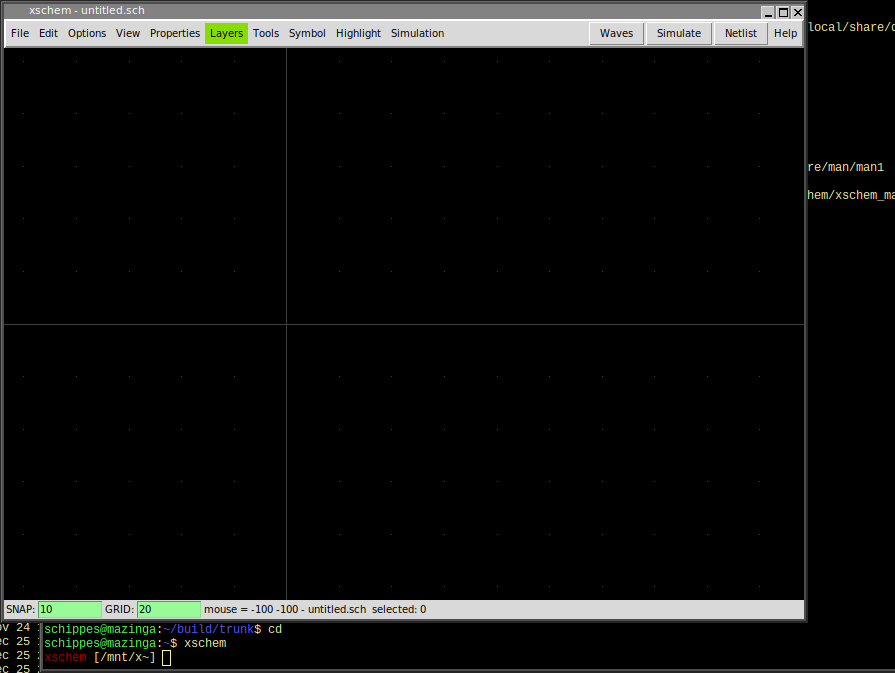
if /usr/local/bin is not in your PATH variable use the full xschem path:schippes@mazinga:~$ /usr/local/bin/xschem
- Close xschem (menu File - Exit)
-
Copy the xschemrc file in the trunk/src directory to the ~/.xschem
directory. If ~/.xschem does not exist create it with mkdir ~/.xschem
schippes@mazinga:~$ cp build/trunk/src/xschemrc ~/.xschem
The ~/.xschem/xschemrc is the user xschem configuration file. You may change it later to change xschem defaults or add / remove / change component and schematic directories. For first tests it is recommended to leave xschemrc as it is. - Run xschem again to try some schematic load tests:
schippes@mazinga:~$ xschem
- Select menu File - Open and navigate to /usr/local/share/doc/xschem/examples:
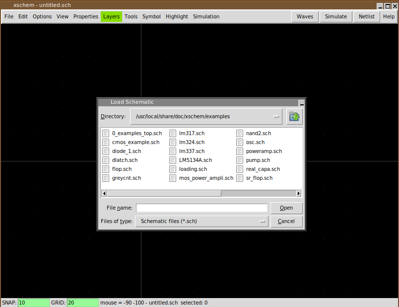
- Select 0_examples_top.sch and press 'OK':
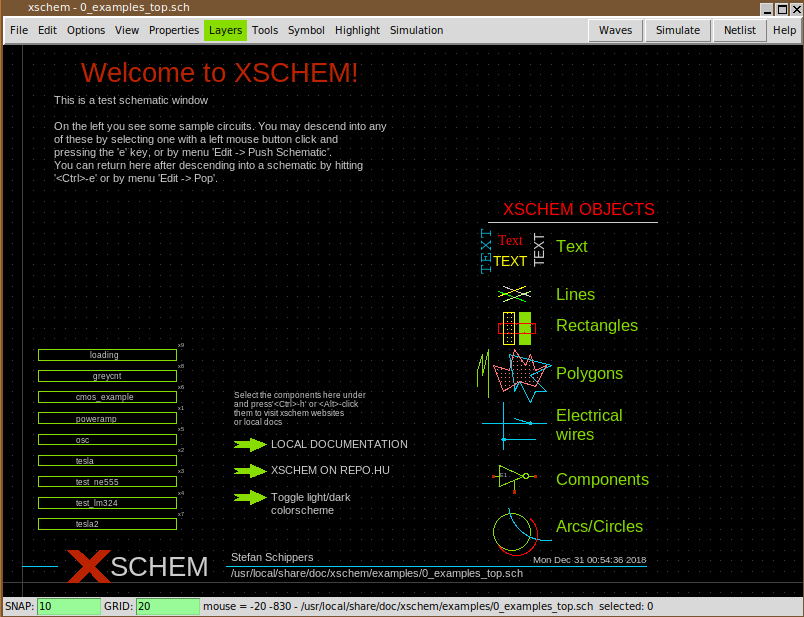
-
This schematic contains a set of sub-schematics. Select one of them by clicking it with
the left mouse button (test_lm324 in this example) and press the Alt-e key combination:
another xschem window will be opened with the schematic view of the selected symbol:
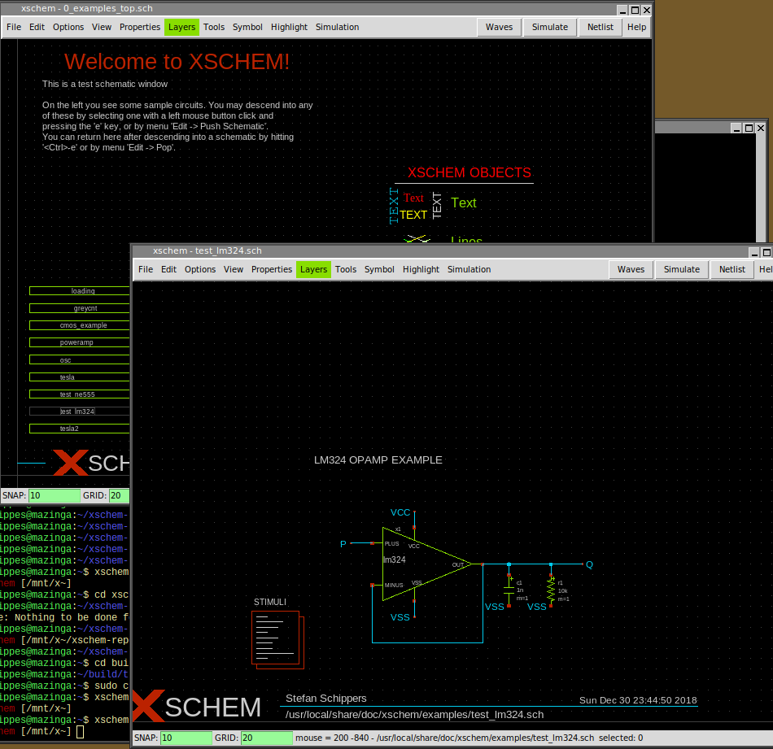
- Click on the lm324 symbol, it can now be edited using the Alt-i key combination:
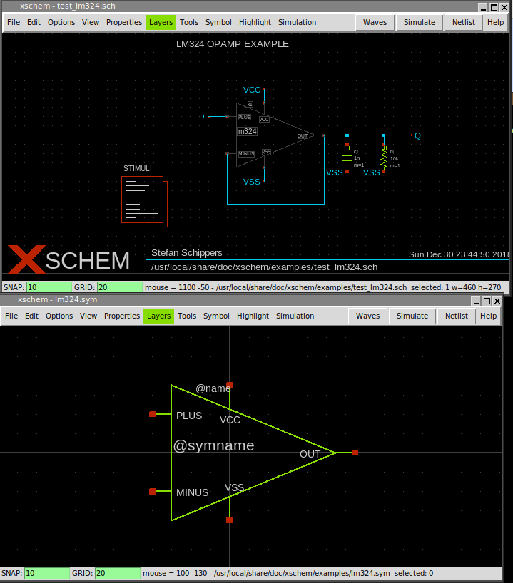
- Now close all xschem windows and restart a new xschem instance from terminal:
schippes@mazinga:~$ xschem
-
We want to create a simple circuit in this empty schematic window:
press the Insert key (this is used to place components) in the file selector
navigate to /usr/local/share/xschem/xschem_library and select res.sym:
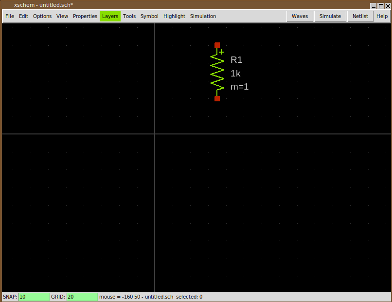
-
Lets add another component: press Insert key again and navigate to
/usr/local/share/doc/xschem/examples and select lm324.sym:
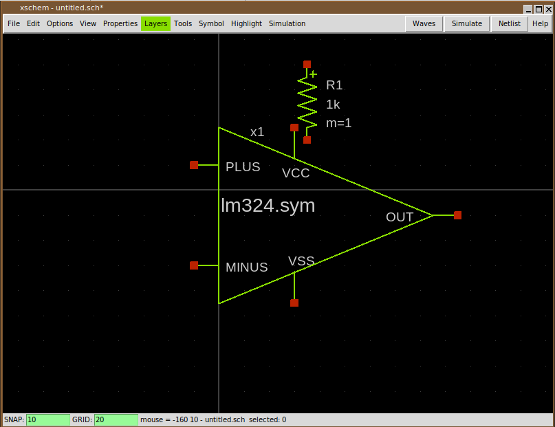
- Select (click on it) the lm324 symbol and move it by pressing the m key:
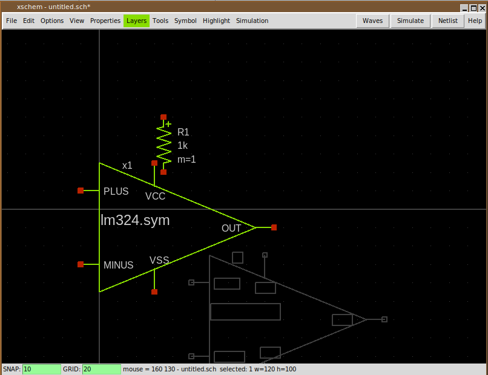
-
Place the lm324 component where you want in the schematic by placing the mouse and
clicking the left button:
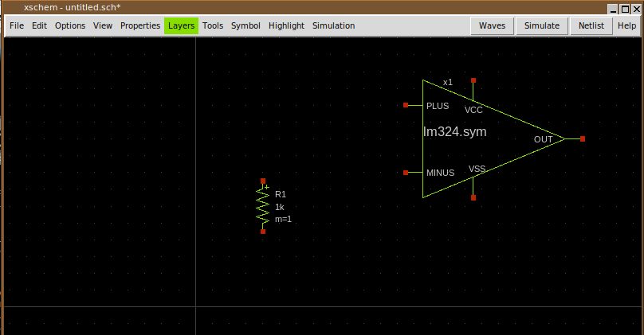
-
The lm324.sym component has a schematic (.sch) representation, while the resistor is a primitive,
it has only a symbol view (.sym). you can see the schematic of the lm324 by selecting it and
pressing Alt-e:
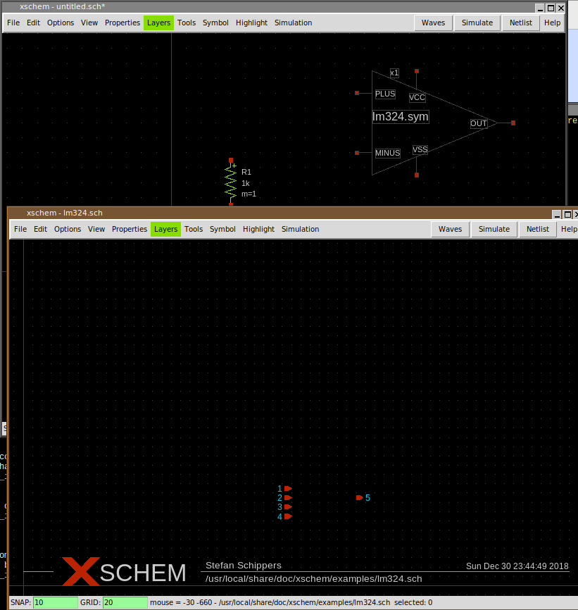
-
Close the lm324.sch window and view the symbol view of the resistor by selecting it and
pressing Alt-i:
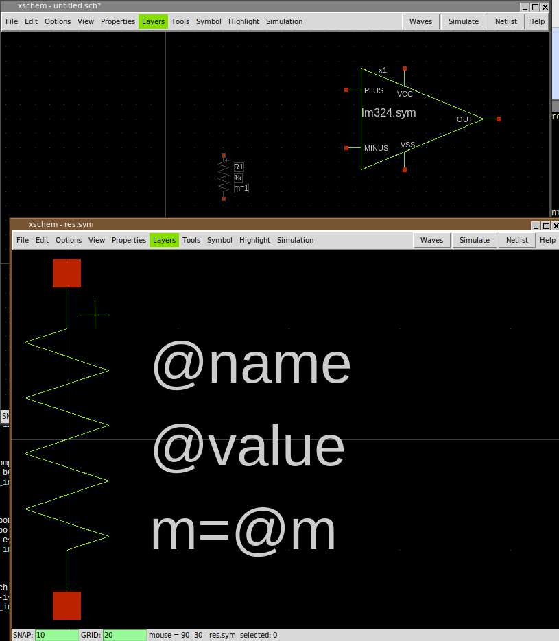